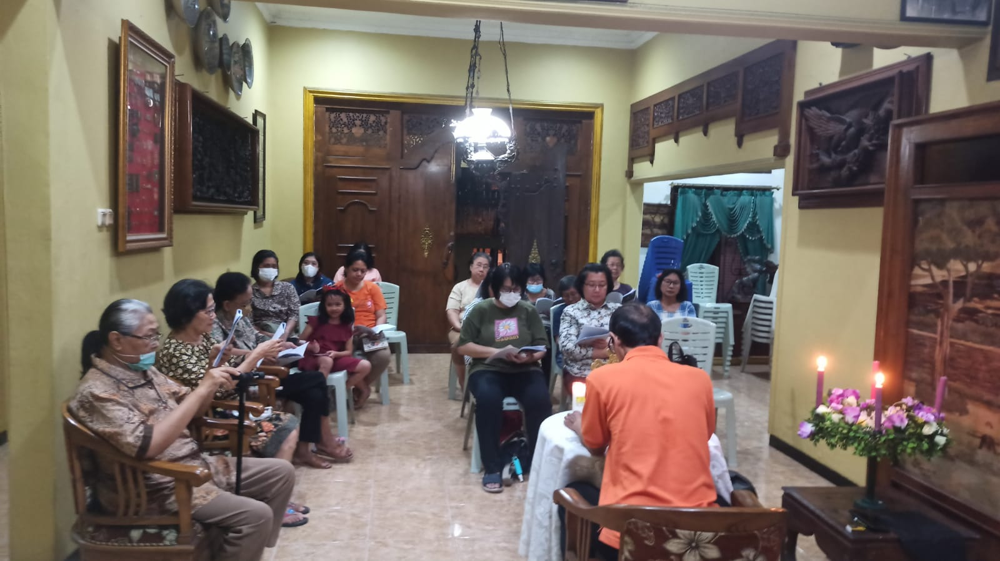
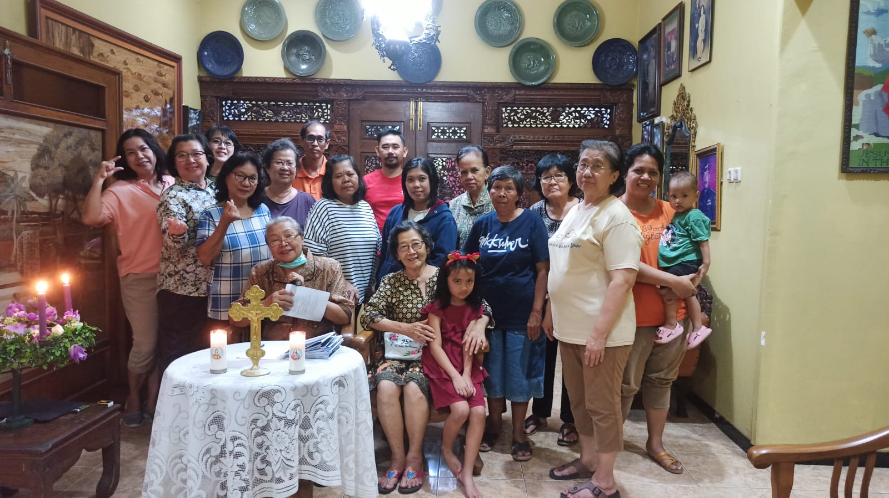
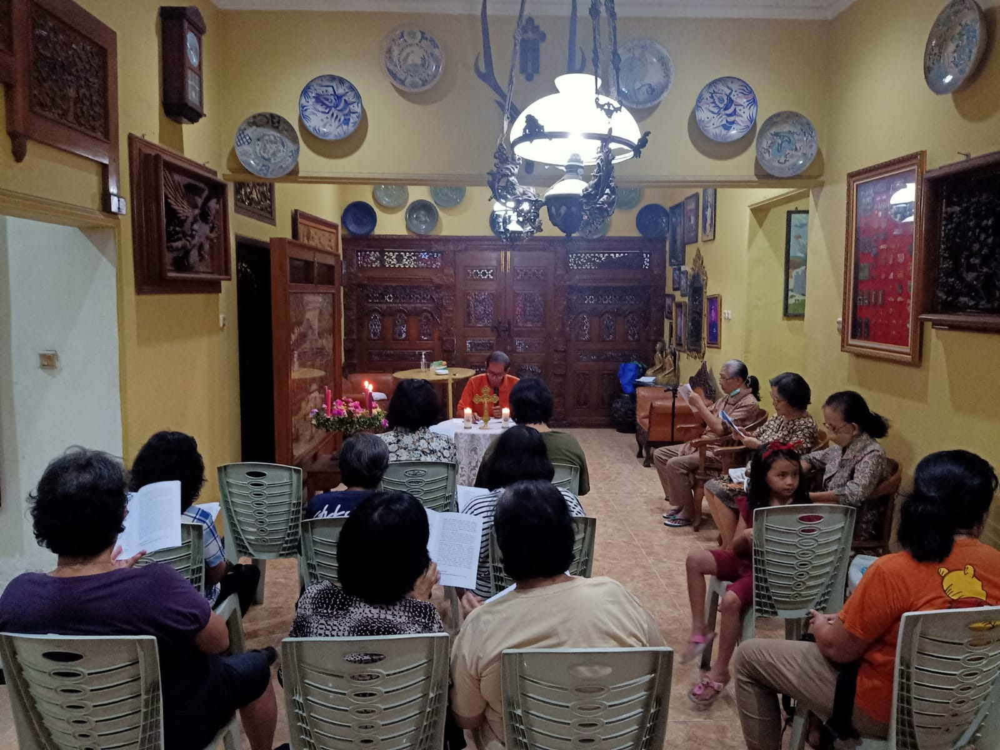

Percakapan Rohani Adven ke 2: Aku tahu kepada siapa aku percaya
  |

|
.jpg)
Tema pertemuan kedua : “Aku tahu kepada siapa aku percaya”
Tujuan
- Menggali lebih dalam pengalaman dan pengetahuan tentang iman kepercayaan akan Yesus Kristus.
Pengantar
Yesus Kristus adalah pusat dari seluruh misteri keselamatan. Pribadinya menjadi jembatan pemersatu; bangsa Israel dalam Perjanjian Lama dengan kita manusia dalam Perjanjian Baru, kita manusia terpilih dengan Allah Bapa. Percaya kepada Yesus memberikan kekuatan dan kepercayaan diri seutuhnya untuk mewartakan kebenaran dan kasih. Kita percaya kepada Kristus karena kita secara personal telah dipanggil dan diselamatkan.
Sakramen Baptis menandai kita sebagai anak Allah dan anggota resmi Gereja. Dengan Sakramen Baptis pula, kita dipanggil menjadi saksi akan Yesus Kristus dalam hidup sehari-hari. Menjadi saksi-Nya berarti pula harus ikut memanggul salib. Pertemuan kedua ini mengajak kita untuk semakin memantapkan diri, bahwa kepada Yesus Kristus kita membawa diri kita pada keselamatan abadi.
Inspirasi Hidup
MARTIR DARI INDIA
Devasahayam Pillai lahir pada 23 April 1712 di Nattalam, distrik Kanyakumari, India dengan nama Neelakanta Pillai. Ia lahir dari sebuah keluarga Hindu. Ketika dewasa, ia adalah seorang pejabat istana Mharaja Marthanda Varma Tranvancore. Ketika bekerja di dalam istana, Devasahayam berjumpa dengan seorang komandan angkatan laut dari Belanda. Komandan tersebut bernama Kapten Eustachius de Lannoy. Mereka bersahabat hingga akhirnya Devasahayam tertarik untuk belajar tentang iman Katolik dari tentara Belanda tersebut.
Persahabatan itu berlanjut hingga Devasahayam dibaptis menjadi seorang katolik. Ia mengambil nama „Lazarus“ sebagai nama baptisnya yang dalam bahasa Malayalam diterjemahkan menjadi „Devasahayam“ yang berarti Tuhan adalah pertolonganku. Ia dibaptis pada tahun 1745 oleh Pastor R. Bouttari Italus SJ. Akan tetapi, setelah ia dibaptis, Devasahayam justru lalu dibenci, bahkan diancam untuk dibunuh. Karena itulah, ia meninggalkan wilayah kerajaan dan tinggal di desa Vadakankulam.
Meskipun sudah tinggal di desa, hidupnya tetap dihantui oleh berbagai macam ancaman. Ia dituduh menjadi penghasut warga untuk pindah agama menjadi Katolik, difitnah bahwa ia membocorkan rasahia kerjaan kepada pihak Belanda karena sama-sama memeluk agama Katolik. Akibatnya, ia dihukum dan dipenjara, bahkan menerima berbagai siksaan fisik.
Singkat cerita, Devasahayam diasingkan di sebuah tempat di daerah perbatasan Aralvaimozhy dengan cara menunggang kerbau. Pada masa itu, mengasingan dengan cara menunggang kerbau adalah suatu bentuk penghinaan. Tubuhnya dicat dengan bintik merah dan hitam, dicambuk 80 kali setiap hari. Pada setiap lukanya, ditaburkan merica oleh para penyiksa. Pada 14 Januari 1752, Devasahayam menerima pistol dari seorang tentara. Ia lalu memberkati pistol tersebut dan mengembalikannya kepada tentara. Akan tetapi, oleh tentara yang menerima pistol tersebut, Devasahayam ditembak sebanyak lima kali hingga wafat. Pada tanggal 15 Mei 2022 yang lalu, Gereja Katolik secara resmi menganonisasinya menjadi seorang Santo. (dari berbagai sumber).
Inspirasi Kitab Suci
PENUHILAH PANGGILAN PELAYANMU (2TIM 1 : 3 – 13)
1:3 Aku mengucap syukur kepada Allah, yang kulayani dengan hati nurani yang murni seperti yang dilakukan nenek moyangku. Dan selalu aku mengingat engkau dalam permohonanu, baik siang maupun malam.
1:4 Dan apabila aku terkenang akan air matamu yang kaucurahkan, aku ingin melihat engkau kembali supaya penuhlah kesukaanku.
1:5 Sebab aku teringat akan imanmu yang tulus ikhlas, yaitu iman yang pertama-tama hidup di dalam nenekmu Lois dan di dalam ibumu Eunike dan yang aku yakin hidup juga dalam dirimu.
1:6 Karena itulah kuperingatkan engkau untuk mengobarkan karunia Allah yang ada padamu oleh penumpangan tanganku atasmu.
1:7 Sebab Allah memberikan kepada kita bukan roh ketakutan, melainkan roh yang membangkitkan kekuatan, kasih dan ketertiban.
1:8 Jadi janganlah malu bersaksi tentang Tuhan kita dan janganlah malu karena aku, seorang hukuman karena Dia, melainkan ikutlah menderita bagi Injil-Nya oleh kekuatan Allah.
1:9 Dialah yang menyelamatkan kita dan memanggil kita dengan panggilan kudus, bukan berdasarkan perbuatan kita, melainkan berdasakan maksud dan kasih karunia-Nya sendiri, yang telah dikaruniakan kepada kita dalam Kristus Yesus sebelum permulaan zaman
1:10 dan yang sekarang dinyatakan oleh kedatangan Juruselamat kita Yesus Kristus, yang oleh Injil telah mematahkan kuasa maut dan mendatangkan hidup yang tidak dapat binasa.
1:11 Untuk Injil inilah aku telah ditetapkan sebagai pemberita, sebagai rasul dan sebagai guru.
1:12 Itulah sebabnya aku menderita semuanya ini, tetapi aku tidak malu; karena aku tahu kepada siapa aku percaya dan aku yakin bahwa Dia berkuasa memeliharakan apa yang telah dipercayakan-Nya kepadaku hingga pada hari Tuhan.
1:13 Peganglah segala sesuatu yang telah engkau dengar dari padaku sebagai contoh ajaran yang sehat dan lakukanlah itu dalam iman dan kasih dalam Kristus Yesus.
Panduan Percakapan
Mengimani Yesus Kristus sebagai Juruselamat berarti percaya kepada Yesus Kristus secara total. Artinya berani memikul salib setiap hari hingga berakhir di Golgota kehidupan. Demikian pula yang dialami dan diwartakan oleh Paulus; ia rela menderita dalam tugas pewartaannya tentang Yesus Kristus. Akan tetapi, iman kepercayaan yang kuat membawa dia kepada kekuatan yang tidak takut pada penderitaan di dunia. Kisah Santo Devasahayam di atas menjadi inspirasi bagi kita untuk berjuang membangun fondasi iman yang kuat. Di samping itu, kisahnya pun menjadi bukti bagi kita, bahwa di zaman modern ini, iman kita tetap diuji.
Maka, marilah kita saling berbagi pengalaman untuk mendalami tema Percakapan Rohani kita dan tentunya agar kita saling dikuatkan.
- Apa yang Anda rasakan dan dapatkan dari “Inspirasi Hidup” serta “Inspirasi Kitab Suci” di atas? Adakah pengalaman sulit yang Anda miliki tetapi justru menguatkan dan meneguhkan iman Anda?
- Di tengah modernisasi, bagaimana Anda menghidupi iman Katolik Anda? Apa tantangan yang Anda rasakan?
- Apakah pendalaman Credo yang dilakukan selama ini membantu Anda untuk semakin percaya diri mewartakan Yesus Kristus dalam hidup sehari-hari? Bagaimana cara Anda mewartakan Kristus dalam pekerjaan dan lingkungan sosial?
Peneguhan
“Sesungguhnya, orang yang membusungkan dada, tidak lurus hatinya, tetapi orang yang benar itu akan hidup oleh percayanya”, demikian disampaikan dalam Kitab Habakuk (Hab 2:4). Karena iman kepercayaan yang dimiliki, seseorang akan dibenarkan. Dengan demikian, dapat dikatakan pula, karena kita memiliki kepercayaan yang penuh terhadap Yesus Kristus, Sang Putra, maka hidup kita pun akan dibenarkan. Dalam konteks ini, dapat diartikan pula bahwa kita akan diselamatkan dan mendapatkan jaminan kehidupan kekal.
Sebagai murid-murid Kristus, kita dipanggil untuk memanggul salib setiap hari. Di zaman modern ini pun, kita tetap dipanggil untuk terus memanggul salib. Di tengah modernitas yang semakin kuat ini, jalan salib kehidupan kita pun semakin penuh liku. Tetapi, inilah “seni menjadi murid- murid Kristus”. Santo Devasahayam menjadi contoh nyata, bahwa di zaman modern ini, perjuangan mewartakan Kristus tetap harus diperjuangkan.
Surat Rasul Paulus kepada Timotius pun meneguhkan kita. Bahwa, menderita dalam nama Yesus Kristus adalah jalan kesatuan kepada Allah Tritunggal. Iman memberikan kita kekuatan agar lebih percaya diri, berani, dan tangguh. Semoga dengan upaya kita mendalami Syahadat kepercayaan, Allah berkenan menambahkan iman dalam diri kita. Terutama dalam mempersiapkan kedatangan Yesus Kristus di masa adven ini, semoga iman kita semakin kokoh dan memiliki akar yang mendalam.
Ayat Emas
Itulah sebabnya aku menderita semuanya ini, tetapi aku tidak malu; karena aku tahu kepada siapa aku percaya.(2Tim 1:12a)
Materi tulisan dari buku Percakapan Rohani Masa Adven 2023 yang disusun oleh Keuskupan Purwokerto